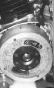

Repair / Ignition
Ignition
Problems, repairs and parts for the ignition.



Photo: Dan's Motorcycle Repair Course (dansmc.com), used with permission.
Problems
- CDI or ECU suspected faultyRide with care
- Ignition cuts out when hot and returns when coolDo not ride
- Ignition timing suspected wrongRide with care
- Engine stop switch faultDo not ride
- Misfires only at high revsRide with care
- No spark at the spark plugDo not ride
- Spark plug is black and sootyRide with care
- Spark plug is wet with oilRide with care
- Spark plug is white or blisteredRide with care
- Weak, thin or orange sparkRide with care
- Points ignition runs rough or missesRide with care
Repairs
- Check for a spark safelyHome workshop · 10 to 15 min
- Remove, check, gap and fit a spark plugRider job · 15 to 20 min
- Test and charge a 12 V batteryHome workshop · 15 min to test; charging takes many hours
- Test the engine stop switchHome workshop · 20 to 30 min
- Test the side stand, clutch and neutral switchesHome workshop · 20 to 40 min
- Test the ignition coil and plug capHome workshop · 30 to 60 min (fuel tank may need removing)
- Test the ignition pick-upHome workshop · 20 to 30 min
- Clean and seal electrical connectorsHome workshop · 15 to 45 min
- Diagnose a suspected CDI or ECU faultWorkshop job · 1 to 2 h assessment
- Check fuses and relaysRider job · 10 to 30 min
- Test the stator (generator coils)Home workshop · 20 to 30 min to test; replacement is workshop work
- Clean and tighten earth connectionsHome workshop · 20 to 45 min
- Read a spark plugHome workshop · 10 to 15 min, plus a short ride
- Clean or replace the air filterRider job · 15 to 40 min (estimate, plus drying time for foam)
- Check the choke or starter valveHome workshop · 20 to 45 min
- Check the carburettor float and needle valveHome workshop · 30 to 60 min with the carburettor off
- Clean the carburettorHome workshop · 1.5 to 3 h
- Read engine fault codes (fuel injection)Home workshop · 15 to 30 min
- Check the oxygen sensorWorkshop job · 10 min for home checks; 30 to 60 min at a workshop
- Find an intake air leakHome workshop · 20 to 45 min
- Replace the fuel filterHome workshop · 20 to 40 min for an inline filter; in-tank filters are workshop jobs
- Check the fuel pump (fuel injection)Home workshop · 15 to 45 min for the home checks
- Check air cooling (fins, airflow, mixture)Rider job · 20 to 40 min
- Check the ignition timingWorkshop job · 30 to 60 min assessment
- Check the engine oil levelRider job · 5 to 10 min (estimate, includes warm-up and settling)
- Test engine compressionHome workshop · 30 to 45 min
- Do a leak-down testWorkshop job · 30 to 60 min
- Assess the top end (cylinder, piston, valves)Workshop job · 3 to 6 h strip and measure
- Check the two-stroke oil pump and linesWorkshop job · 30 min check; 1 to 2 h with bleeding and setting
- Check the crankcase breatherHome workshop · 20 to 30 min
- Check the fuel tank ventRider job · 10 to 20 min
- Road test to diagnose a faultRider job · 15 to 30 min
- Clean a handlebar switchHome workshop · 30 to 60 min
- Find a wiring faultHome workshop · 30 to 90 min
- Test the ignition switchHome workshop · 20 to 40 min
- Check and adjust valve clearanceHome workshop · 45 to 90 min (estimate, screw-and-locknut type)